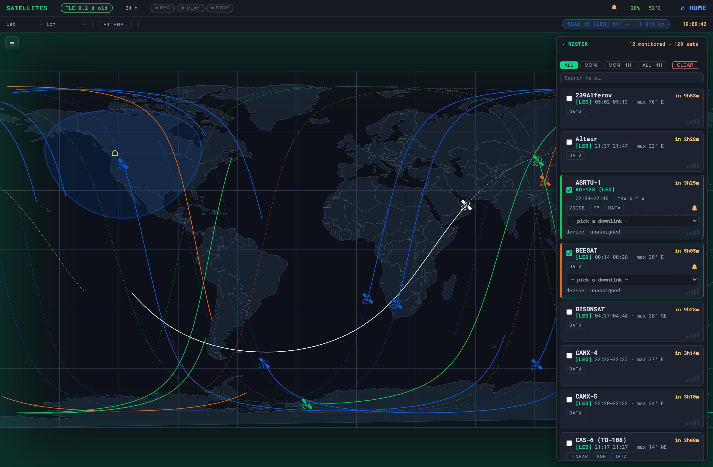

Satellites
Offline pass prediction, sky tracks, and RTL-SDR listening for the birds overhead

The Satellites page at /server/satellites/ answers one
question offline: which birds are workable or receivable from here, now and
soon? It predicts passes, draws the ground track and sky path, animates the
satellite live, alerts you before a pass, and — with an RTL-SDR — can
listen to a selected downlink. The prediction core is pure math and
needs no radio at all; listening is an optional layer on top.
Prediction is hardware-free and always available. Listening needs an RTL-SDR and a Pi 4 / 4 GB or better; the sky-plot and timeline run happily on lighter boxes. It needs your station lat/lon to compute look-angles.
The roster
The right panel is the roster — every satellite OASIS knows about. The All and Moni views sort alphabetically (natural numeric, so RS-9 sorts before RS-44); only the two 1h views sort by next pass, soonest first with an in-progress pass at the top. That split is deliberate: an alphabetical list is what you scan when you are browsing, and a pass-ordered list is what you act on.
| View | What it shows |
|---|---|
| All | The whole roster, alphabetically. |
| Moni | Only the birds you have ticked to monitor, alphabetically. |
| Mon · 1h | Monitored birds with a pass inside the next hour, sorted by next pass. |
| All · 1h | Every bird passing over in the next hour, sorted by next pass — tick one to start monitoring it. |
| Clear (red) | Unticks every monitored bird and disarms every pass alert, after a confirm. It then drops you back to All, since a Monitored view would now be empty. |
Mon · 1h and All · 1h are two distinct views, not one filter applied to the other two. Both re-sort by next pass and re-render every 2 s, so a countdown you are watching keeps moving and a pass that has just ended drops out on its own.
Row anatomy
Each roster card carries more than a name. Reading top-left to bottom-right:
| Element | Reads |
|---|---|
| Name line | The catalogue name — what matches CelesTrak, GPredict and the TLE file. Any trailing orbit tag is stripped off it and moved down. |
| Second line, left | The amateur designator and orbit class, e.g. RS-44 [LEO]. Every row gets this line even when the bird has no OSCAR number (then it is just [LEO]), so the class always sits in the same place. |
| Second line, right | The pass as a range with peak azimuth: 16:00–16:17 · max 17° SW. A range, not a single acquisition time — “16:00 · max 17°” read as though it reached 17° at 16:00, which it does not. Local time, 24 h, always. |
| Countdown | Sits on the name row, not between the lines: in 45m before AOS, LOS 4m once the window is open. Relative only — the absolute window is on the sub-line. |
| Mode badges | The roster’s closed vocabulary, in a fixed order: WEATHER, VOICE, FM, APRS, SSTV, LINEAR, SSB, DATA, CREWED. A monitored bird missing from the TLE cache also gets a no TLE badge — it can never compute a pass and will never plot. |
| Live chip | Only while the bird is above the horizon: current elevation, a rising / setting arrow (↗ / ↘), and — for monitored birds only — the slant range in km. Slant range, not ground distance: those differ by a factor of two at low elevation, and it is the slant range a radio cares about. |
| Bar meter | Five segments, lit by elevation on non-linear thresholds (2 / 10 / 22 / 38 / 58°), red at the horizon through blue overhead. Propagated live in the browser with satellite.js, so it moves without a server round-trip. |
| Row checkbox | Adds the bird to your monitored set — and arms its pass alert. See below. |
Filtering
Filtering is a single Filters dropdown carrying an active-count badge, so a filter you left on is never invisible behind a collapsed menu. The panel is built from what is actually in your roster — a value with no birds behind it is not offered — and is split into three sections. Within a section the ticks are OR’d; the sections are AND’d with each other and with the name search box.

| Section | Values |
|---|---|
| Capability | WEATHER, VOICE, FM, APRS, SSTV, LINEAR, SSB, DATA, CREWED — what the bird carries. |
| Band | VHF, UHF, L-band — the downlink band, i.e. what your antenna and dongle can actually hear. |
| Orbit | LEO, MEO, GEO, HEO. |
The Orbit axis is derived from the two-line element alone — the semi-major axis from the mean motion by Kepler, then LEO under 2000 km mean altitude, MEO under 30000 km, GEO above that, and HEO for anything with an eccentricity over 0.25 (Molniya-like). Because it is computed from the TLE rather than read from a label, it works on a bare, never-synced roster too. Use it to cut a 150-row list down to the LEO birds an omni can actually work.
The roster itself is built offline by services/satellites/build-roster.py,
which aggregates SatNOGS transmitter data and CelesTrak
orbital groups into configuration/satellites.json (names, capabilities,
downlink frequencies, modes). Orbits come from a TLE cache refreshed
roughly every three days when the box has internet, via the offline manifest.
There is no separate refresh button — the TLE-age pill
is the control. It reads TLE 1.4 d old (green under five
days, amber over) or no TLE data — click to sync on a fresh box.
Clicking it rebuilds the roster from SatNOGS + CelesTrak, then recolours and re-plots
your selection in place. This is the one operator-triggered exception to
“runtime never fetches”: offline it flashes no internet — try
later on the pill and restores the previous state.
Why is bird X not in my roster?
Because its passes never culminate high enough. A pass is only listed if it reaches a
minimum elevation, and that floor is an operator setting: put
"min_elev" in configuration/station.json. The default is
10°, and an untouched install behaves exactly as it always did.
What makes a low pass unworkable is your horizon — treeline, roofline,
the hill to the north-east — not anything about the satellite, which is why this
cannot be right in the source. A station looking out over water can drop it to 5; one
in a valley should raise it. It is a single number for a horizon that is not a circle,
so pick the value that is honest for the direction you care about. Out-of-range or
unparseable values silently fall back to 10° rather than emptying the list.
The floor is part of the pass-cache key, so changing it recomputes rather than serving
a stale window, and /api/satellites/passes reports it back so you can read
off what the config actually did.
Monitoring & pass alerts
Ticking a bird does three things at once: it joins your monitored set, it is drawn on the map in its capability colour, and its pass alert is armed. Unticking it disarms the alert and clears it, so no orphan bell is left behind to fire months later when the bird is re-selected.
The per-row bell is now an override, not the gate. Deciding to watch a satellite is deciding you want to be told it is coming; making that a second switch meant passes arrived in silence with nothing on screen to explain it. Use the bell for the exception — monitor the weather birds for the map and the coverage pills, then disarm the ones you do not want waking the shack tonight.
An armed bird chimes a Morse “V” (· · · —), three times, at T−10 min at 620 Hz and again at T−5 min at 780 Hz — closer reads as higher and more urgent. There is no AOS chime; by then it is too late to react. The chime is synthesised in the browser with Web Audio, so it needs no audio file and works fully offline. Once the T−10 Vs finish, a spoken heads-up names the bird and how good the pass is; the sentence is synthesised a minute early so the voice follows the chime instead of trailing it. If no voice is installed the announcement silently no-ops and the chime still carries the alert. See Station Voice.
The header carries a global mute (the bell glyph beside the clock).
Mute is deliberately per-device and stays in this browser’s
localStorage: the shack kiosk should be silenceable overnight while the
laptop still chimes. Muting also cuts whatever is sounding at that instant, rather than
only applying to the next alert. The bells themselves go the other way — a bell
is a property of the bird, so it lives in the shared server roster beside
selected and the kiosk honours it without you having to arm it twice.
Capability colours and coverage
A monitored bird’s track, marker and row rail are drawn in a colour that spells its capability set, by additive RGB blend of three channels: Voice (FM / LINEAR / SSB) green, Imaging (WEATHER / SSTV) blue, Data (APRS) orange. The mixes fall out of the arithmetic, so a multi-capability bird such as the ISS lights up on its own. A bird that only beacons telemetry takes the Data orange but never blends — bare telemetry is on the large majority of the roster and blending it would warm every colour on the map into meaninglessness.
The colour key is the burger button at the top-left of the map. Its swatches are computed through the same blend the map uses, so it cannot drift from what you are looking at; the open/closed choice persists.
Additive blending lives on the red-green axis, so this deliberately trades colourblind-safety for expressiveness on a single-operator station. Full capability detail is always in the row badges and the map popup.
While a monitored bird is above the horizon and inside a pass the server
actually predicted, the map takes a green coverage wash whose strength
scales with elevation, and a coverage pill appears in the header for
each such bird, in that bird’s own track colour, reading name, elevation, trend
arrow and slant range — the same readout as the row chip, so the two agree on
sight. The pill is gated on the predicted pass window on purpose: a bird transiting
below your min_elev would otherwise light the pill with no card and nothing
to click.
Passes & tracks
Selecting a bird computes its passes with Skyfield on the server and draws them: a polar sky plot (where it rises, culminates, and sets) and a ground track over the world map, with the satellite animated along it. This is served by the satellites API:
| Endpoint | Returns |
|---|---|
GET /api/satellites | The roster, each bird decorated with its TLE lines and its downlinks grouped by (frequency, demodulator) with mode-support flags. |
GET /api/satellites/passes | Predicted passes over a window of hours (default 48), plus the min_elev floor that produced them. |
GET /api/satellites/track | Ground-track points for one bird (sat, from, to). |
POST /api/satellites/select | Set the monitored birds — one toggle, or a whole selections set in a single write. |
POST /api/satellites/bells | Arm / disarm pass alerts, as a bells set in a single write. |
POST /api/satellites/refresh | Rebuild the roster from SatNOGS + CelesTrak. Online-only; being offline is 503 with code OFFLINE, not a 200. |
GET /api/satellites/listen/status | Capture state (recording / streaming / seconds / frequency) and whether a capture is possible at all: missing tools, dongle present, device assigned, busy, holder. |
POST /api/satellites/listen | Start recording the armed downlink to a WAV. |
GET /api/satellites/listen/stream | Live pass audio as a chunked MP3, so a plain <audio src=…> works. |
POST /api/satellites/listen/stop | Stop the capture and sweep the recordings directory. Idempotent — stopping an idle capture is a success. |
GET /api/satellites/listen/recordings | List captured WAVs with size and recorded-at time. |
GET /api/satellites/listen/recording/<file> | Download one recording. |
Listening (RTL-SDR)
Nothing is armable until a device is assigned to
satellites in the hardware console. This is far and away the most
common “why can’t I do anything on this page”: the downlink list stays
readable so you can see what a bird offers from a laptop with no dongle, but every
option is disabled and the row reads device: unassigned. Assign one first
— see Service Operations.
Capture is a two-step model. On a monitored row, a downlink dropdown
lists that bird’s downlinks as mode · frequency, sorted by
label then frequency — you scan for “where’s the FM?” and the
frequency only breaks ties. Picking one arms it. What is armed is a
frequency|mode pair, not a bare frequency: after grouping, two
entries can still share a frequency and need different demodulators (FM and CW both sit
on 435.245 on some birds), and a frequency alone cannot say which one you meant.
The transport then acts on whatever is armed. ⏺ Rec /
▶ Play / ⏹ Stop live in the page header,
not on the row — one dongle means one capture, so Rec and Play are mutually
exclusive and a global transport is the honest control. A downlink is armable from
about five minutes before AOS through LOS; arming a new one disarms the
old. Play streams the pass into a hidden <audio> element; closing it
ends the HTTP request, which tears the server-side pipeline down.
Demodulation follows the transmitter mode automatically:
- The FM family — FM/NFM voice, packet (AFSK, FSK, GMSK, MSK, GFSK), APRS, analog SSTV and weather APT → wide FM at 48 kHz. VHF/UHF Doppler stays inside the FM passband, so these need no active retuning.
- CW → USB tuned 700 Hz low, so the carrier lands as an audible ~700 Hz tone that glides in pitch with Doppler — expected for a beacon. USB / SSB → narrow USB, LSB → narrow LSB. Narrowband and far more Doppler-sensitive.
- PSK / LRPT / DVB — not capturable. These
stay visible in the dropdown but disabled and annotated — not supported,
because “we cannot demodulate this yet” is information about the bird and
hiding the row would leave you wondering where the beacon went. The server
re-validates and answers
400with codeMODE_UNSUPPORTED— never trust the button.
Listen needs the dongle to itself. Exactly like the
tuning bench and ADS-B, stop
the APRS SDR feed first — the row will name the
holder. Recordings are safety-capped at 20 minutes and written to
configuration/sat-recordings/ (per-machine, gitignored).
Recording retention
Nothing used to delete these, and on a field station a full root filesystem does not degrade one feature — it takes the station down. So the directory is swept before every capture starts and again after it stops:
- A 2 GB budget on the directory. Oldest goes first.
- A 1 GB free-space floor: if the card still cannot take a
20-minute worst case after the sweep, the capture is refused outright
(
507,INSUFFICIENT_STORAGE) rather than filling the card mid-incident. - Pruning is size-primary. Age alone bounds nothing here — this writer has no fixed rate, so auto-recording several weather birds is well over a gigabyte a day that a 72-hour rule would never touch. The secondary age sweep is off by default, because deleting under no space pressure at all is pure data loss.
- The newest recording is never pruned, so a mis-set budget cannot eat the pass you just captured.
At 48 kHz / 16-bit / mono a typical ten-minute LEO pass is about 58 MB, so
2 GB holds roughly 35 passes. The budget, the floor and the age sweep are all
overridable by environment variable (SAT_RECORD_MAX_BYTES,
SAT_RECORD_MIN_FREE_BYTES, SAT_RECORD_MAX_AGE_S).
Units on this page
Satellite readouts are always metric. Slant range is in km whatever the Imperial / Metric toggle says, and altitudes here are km too. This is a deliberate contract, not an oversight: satellite and amateur-radio work is metric worldwide — we speak of the 2 m band, not the 6.6 ft band — and converting would put OASIS at odds with every other tool you have open. The units toggle is for terrestrial readouts, where the preference is a real preference.
Troubleshooting
| Symptom | Cause & fix |
|---|---|
Roster loads but every row says Lat – Lon – / no pass times |
No station position. Set your lat/lon (the GPS card or configuration/station.json); look-angles can’t be computed without it. |
| TLE age pill is amber / high | Elements are stale and predictions drift. Click the pill while online — it is the refresh control (POST /api/satellites/refresh). TLEs also auto-sync ~every 3 days via the offline manifest. |
| Roster is empty | configuration/satellites.json is missing. Click the TLE pill while online, or rebuild it directly: python3 services/satellites/build-roster.py. |
| A bird you expect is simply not listed | Its passes never culminate above your min_elev floor (default 10°). Lower it in configuration/station.json if your horizon really is that clear. |
A monitored bird shows a no TLE badge and never plots |
It is in the roster but absent from the TLE cache, so no pass can be computed. Sync TLEs (click the pill) while online. |
| Passes look right but times are hours off | Clock skew. Satellite math is time-critical — set up GPS time sync so the Pi’s clock is disciplined without internet NTP. |
skyfield / numpy import error in the log |
The prediction wheels weren’t installed. They ship in the bundle but must be in the manifest’s pip groups — reinstall the satellites feature from the setup menu. |
| The downlink dropdown opens but every option is greyed out | Either no device is assigned to satellites (row reads device: unassigned — fix it in the hardware console), or the bird’s only modes are PSK / LRPT / DVB, which cannot be demodulated. |
| Rec does nothing / “dongle busy” | Another consumer holds the RTL-SDR; the row names the holder. Stop aprs-sdr-feed.service and any ADS-B, then try again. Listening needs a Pi 4 / 4 GB or better. |
| A pass came and went in silence | Check the header mute (it is per-device, so a muted kiosk says nothing about this laptop), then the row bell — monitoring arms it, but you may have disarmed that one bird deliberately. |